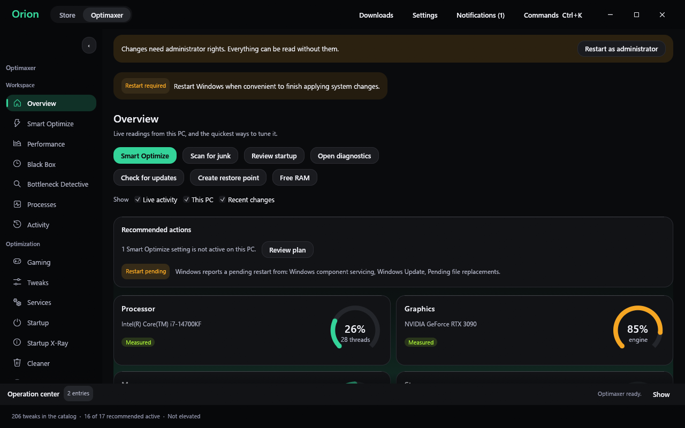
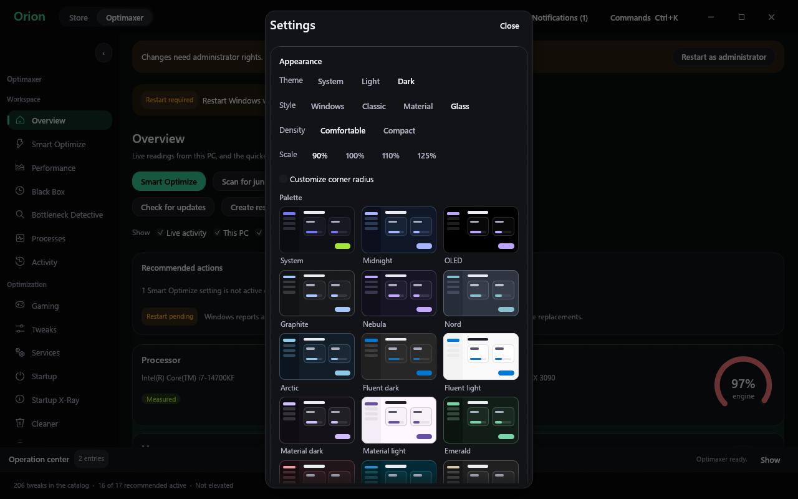
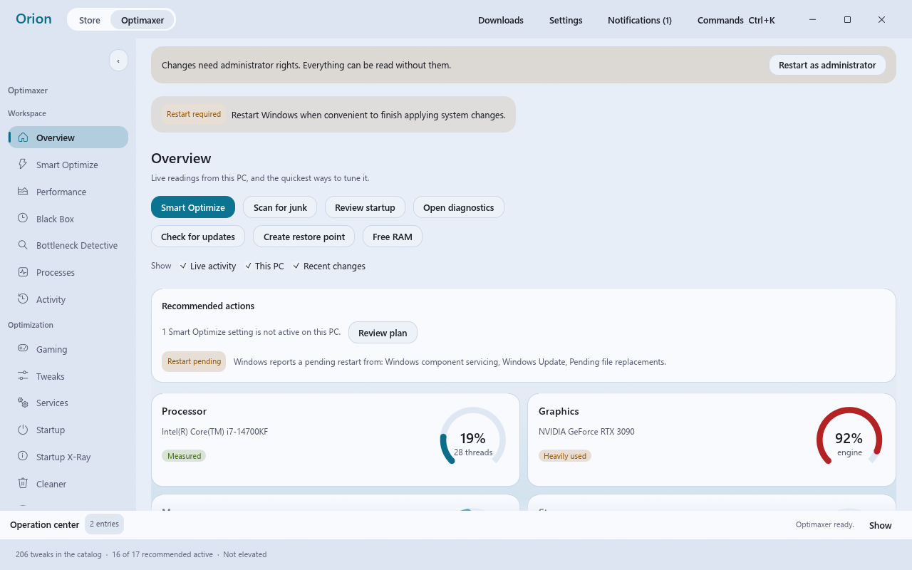
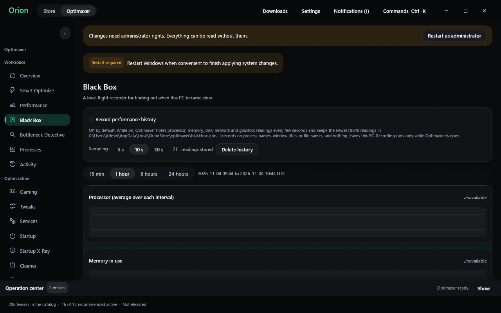
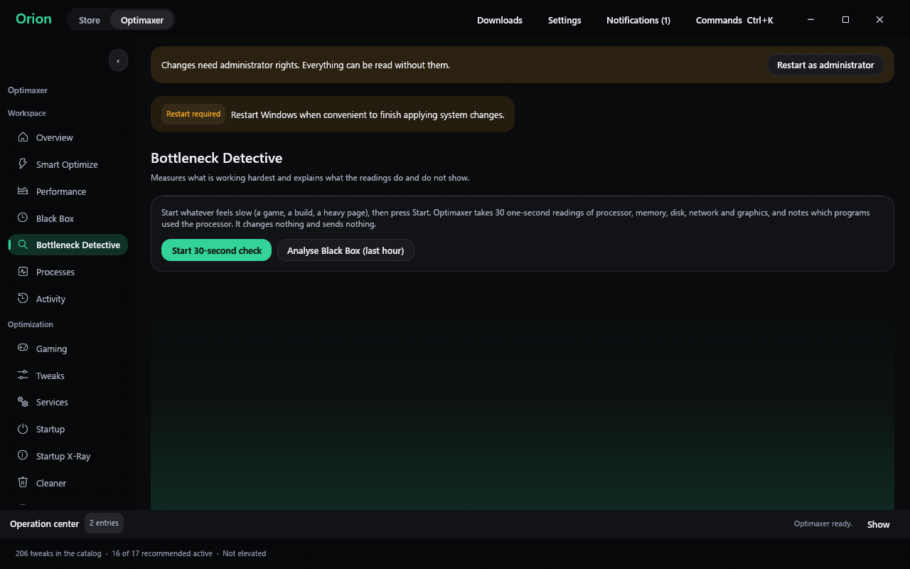

225 tweaks
Performance, gaming, network, privacy and interface settings. The desktop app ports 213 of them. Pick Beginner, Enthusiast or Expert view, from plain language to exact registry keys.
Windows 10 and 11
Optimaxer is a free, open-source optimizer. It shows each change before it runs, saves the value it replaces, and measures your PC before it says anything got faster.

What you get
Performance, gaming, network, privacy and interface settings. The desktop app ports 213 of them. Pick Beginner, Enthusiast or Expert view, from plain language to exact registry keys.
Reads your hardware (laptop or desktop, SSD or HDD, RAM, GPU) and suggests only the tweaks that fit. It lists why it skipped the others.
An opt-in recorder for processor, memory, disk, network and GPU readings. Open it after a slowdown to see what happened, then export a report.
A 30-second check that marks each finding as observed or as a guess, and lists what it could not measure. It gives no score.
Windows' own boot history, the apps and services it flagged as slow, a trend that ignores normal variation, and boot times before and after your changes.
Record 30 seconds with Intel PresentMon: average FPS, 1% and 0.1% lows, stutters. Compare before and after with the run-to-run noise in mind.
Preview what a cleanup removes, see service dependencies before you change one, turn startup items off, and compare DNS providers.
The Orion Store and WinGet in one window. Tick several apps and install them one after another, each in a visible console you can read.
Create a restore point, check saved backups for damage, review a timeline of what changed, and undo one tweak or all of them.
Safety
See the privacy policy for every network request the software makes, and the terms for what you accept by using it.
Themes
Pick a palette and the Overview changes with it: ring gauges, a compact list, or standard cards. A Glass style adds larger corners and a soft glow. Dark and light variants and a reduced-motion option are built in.


Diagnostics


Black Box keeps its history in a local file, records no process, window or file names, and can be exported or deleted at any time. Bottleneck Detective reports a processor or memory finding only when the reading stayed at or above 90% for a meaningful share of the check.
Download
| Edition | For | Get it |
|---|---|---|
| Desktop app Rust, one exe | Windows 10 and 11. Includes the Orion Store catalog. Checks for updates on launch and verifies the download before replacing itself. | Download the zip from Releases |
| PowerShell edition WPF window | Windows 10 and 11. Has the full tweak set, Appx debloat, Windows features and an unattended mode. | Run the one-line installer below, or download the zip |
| Linux edition Python | Manjaro and other Arch-based systems, and Fedora. Tkinter window and command line. Tested on a simulated system, so run it with --dry-run first. | Run the installer below |
irm https://raw.githubusercontent.com/bliper2/optimaxer/main/install.ps1 | iexIt installs to %LOCALAPPDATA%\Optimaxer, checks the SHA-256 of the download against the one GitHub publishes, adds shortcuts and starts the app. If you want to read the code first, download the zip from Releases and run Launch.bat.
curl -fsSL https://raw.githubusercontent.com/bliper2/optimaxer/main/linux/install.sh | bash
optimaxer --dry-runThe desktop exe is not code-signed, so Windows SmartScreen may warn you. Compare the file's SHA-256 with the one on the release page before you run it.
Questions
Some tweaks help some PCs. Optimaxer will not promise a number. Use the benchmark to compare your own before and after runs.
No. It contacts GitHub for updates and the catalog servers you ask it to, and nothing else. The privacy policy lists every request.
Registry values, service start types and scheduled tasks come back. Deleted cache files and cleared event logs do not, and the app labels each tweak as reversible, conditionally reversible or not reversible.
The FAQ covers permissions, antivirus warnings, updates and removal. Bugs and requests go to the issue tracker.